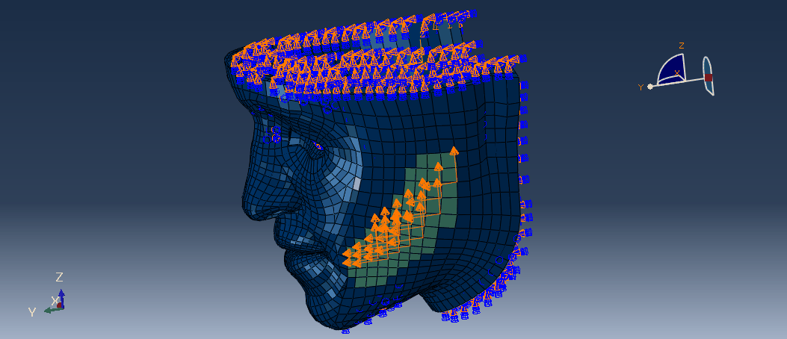

ABAQUS · PYTHON · BIOMECHANICS
Face–Suture Interaction
Nonlinear finite element modeling of facial soft tissue and surgical suture interaction, including model development, loading and boundary conditions, and numerical investigation of tissue response.
View project →